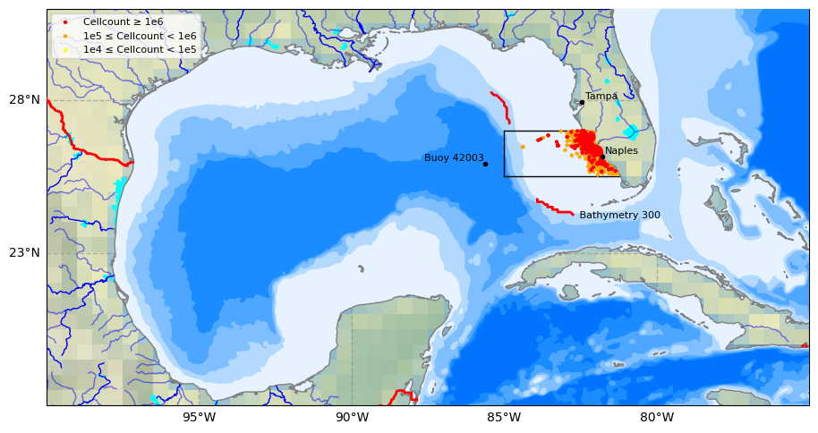

Red tides data#

import numpy as np
import pandas as pd
import os
from pathlib import Path
from scipy.io import loadmat # this is the SciPy module that loads mat-files
import matplotlib.pyplot as plt
import cartopy.crs as ccrs
import cartopy.feature as cfeature
import warnings
warnings.filterwarnings("ignore", message="facecolor will have no effect as it has been defined as \"never\"")
1. Red tide data for study area#
Data download: https://www.ncei.noaa.gov/archive/archive-management-system/OAS/bin/prd/jquery/accession/details/120767
Direct access to current dataset (habsos_20240430): https://www.ncei.noaa.gov/data/oceans/archive/arc0069/0120767/8.8/data/0-data/
Data documentation: https://www.ncei.noaa.gov/data/oceans/archive/arc0069/0120767/8.8/data/0-data/Support Documents/AL Data Documentation 2016.pdf
# Read a csv file with Pandas
df = pd.read_csv('input/habsos_20240430.csv', low_memory=False)
# Select column names that you need for your analysis (e.g., 'LATITUDE', 'LONGITUDE', 'SAMPLE_DATE', 'CELLCOUNT', etc.)
selected_columns = ['STATE_ID','DESCRIPTION','LATITUDE', 'LONGITUDE', 'SAMPLE_DATE', 'CELLCOUNT',
'SALINITY','WATER_TEMP','WIND_DIR','WIND_SPEED']
# Filter the DataFrame to include only the selected columns
df = df[selected_columns]
# Display your DataFrame
df
# Create a new column 'region' with default value 'Other'
df['REGION'] = 'Other'
# Mask for dicing: Define mask for Tampa Bay region based on latitude and longitude values
tampa_bay_mask = (df['LATITUDE'] >= 27) & (df['LATITUDE'] <= 28) & (df['LONGITUDE'] >= -85)
# Assign value 'Tampa Bay' to rows matching Tampa Bay mask
df.loc[tampa_bay_mask, 'REGION'] = 'Tampa Bay'
# Mask for decing: Define mask for Charlotte Harbor estuary region based on latitude and longitude values
charlotte_harbor_mask = (df['LATITUDE'] >= 25.5) & (df['LATITUDE'] < 27) & (df['LONGITUDE'] >= -85)
# Assign value 'Charlotte Harbor' to rows matching Charlotte Harbor mask
df.loc[charlotte_harbor_mask, 'REGION'] = 'Charlotte Harbor'
#Display dataframe
df
| STATE_ID | DESCRIPTION | LATITUDE | LONGITUDE | SAMPLE_DATE | CELLCOUNT | SALINITY | WATER_TEMP | WIND_DIR | WIND_SPEED | REGION | |
|---|---|---|---|---|---|---|---|---|---|---|---|
| 0 | TX | Copano Bay 4 | 28.07237 | -97.21968 | 2023/09/27 | 0 | NaN | NaN | NaN | NaN | Other |
| 1 | TX | Copano Bay 2 | 27.99567 | -97.16831 | 2023/09/27 | 0 | NaN | NaN | NaN | NaN | Other |
| 2 | TX | Copano Bay 3 | 28.03930 | -97.15836 | 2023/09/27 | 0 | NaN | NaN | NaN | NaN | Other |
| 3 | TX | Copano Bay 1 | 28.06491 | -97.11270 | 2023/09/27 | 0 | NaN | NaN | NaN | NaN | Other |
| 4 | FL | off New Smyrna Beach; Atlantic | 29.17460 | -78.27890 | 1990/12/20 | 0 | NaN | 24.2 | NaN | NaN | Other |
| ... | ... | ... | ... | ... | ... | ... | ... | ... | ... | ... | ... |
| 211829 | TX | Nueces Bay, East of Nueces River Delta | 27.86611 | -97.51636 | 2015/10/14 | 0 | NaN | NaN | NaN | NaN | Other |
| 211830 | TX | Viola Turning Basin (Sample ID 1230-1) | 27.84455 | -97.52228 | 2009/12/30 | 1000000 | NaN | NaN | NaN | NaN | Other |
| 211831 | TX | South Padre Island, Brazos Santiago Pass south... | 26.18451 | -97.66535 | 2015/09/25 | 922000 | 34.0 | 29.0 | NaN | NaN | Other |
| 211832 | TX | South Padre Island, Brazos Santiago Pass south... | 26.18451 | -97.66535 | 2015/10/02 | 1513000 | NaN | NaN | NaN | NaN | Other |
| 211833 | TX | South Padre Island, Brazos Santiago Pass south... | 26.18451 | -97.66535 | 2015/09/25 | 248000 | 32.0 | 29.0 | NaN | NaN | Other |
211834 rows × 11 columns
2. Plot red tides#
2.1 Bathymetry data#
#[1] Load zos data
member='AVISO-1-1_phy-001-030_r0'
#[2] Load Bathymetry_AVISO data
#Bathymetry=['NOAA','B-50','B-300','B-1000','B-2000','B-3000']
Bathymetry=['B300']
for bathymetry in Bathymetry:
yx=np.loadtxt('input/DigitizeSegments_Bathymetry_AVISO_{}.csv'.format(bathymetry),delimiter=',')
print(yx.shape)
# Create coordinates for the four labels
latitudes= yx[:,0] # latitude values
longitudes= yx[:,1] # longitude values
(119, 2)
##### [1] Display processed results
#Section information (KB_Data_ESM)
#m=loadmat('zos_data_B300/Optimization/R3210.mat')
m=loadmat('input/zos_data_B300_segments.mat')
ndata = {n: m['row'][n][0,0] for n in m['row'].dtype.names}
dfm=pd.DataFrame.from_dict(dict((column, ndata[column][0]) for column in [n for n, v in ndata.items() if v.size == 1]))
#display(dfm)
#display(dfm)
NSeg=dfm['N'][0]; ns=dfm['Nstr'][0]; ne=dfm['Nend'][0];SSeg=dfm['S'][0]; ss=dfm['Sstr'][0]; se=dfm['Send'][0];
print('{} ({},{}) and {} ({},{}) north and south segments with {} and {} cells, respectively'.format(NSeg,ns,ne,SSeg,ss,se,ne-ns+1,se-ss+1))
B-300 (9,22) and B-300 (59,78) north and south segments with 14 and 20 cells, respectively
2.2 Convert lat and lon degree to decimal#
# Function to convert DMS to decimal degrees
def dms_to_decimal(degrees, minutes, seconds, direction):
decimal = degrees + minutes / 60 + seconds / 3600
if direction in ['S', 'W']:
decimal = -decimal
return decimal
# Input values
lat_dms = (25, 42, 1, 'N')
lon_dms = (83, 38, 28, 'W')
# Convert to decimal degrees
lat_decimal = dms_to_decimal(*lat_dms)
lon_decimal = dms_to_decimal(*lon_dms)
print(f"Latitude: {lat_decimal:.6f}, Longitude: {lon_decimal:.6f}")
Latitude: 25.700278, Longitude: -83.641111
2.3 Plot study area#
# 0) Select data to plot
Plot_Num= 2 #Type 1 to plot SLA data for the first time step or 2 to plot bathymetry lines
# 1) Select plot extend: Lon_West, Lon_East, Lat_South, Lat_North in Degrees
extent = [-75, -100, 18, 31] #Gulf of Mexico
#extent = [-80, -100, 20, 31]
# 2) Select projection
projPC = ccrs.PlateCarree()
# 3) Create figure
fig = plt.figure(figsize=(11, 8.5))
#plt.subplots_adjust(hspace=0.1, wspace=0.2) # Adjust the height and width spaces between subplots
# 4) Loop to plot variables
variable = 'sla'
colormap = 'coolwarm'
title=''
# 5) Create Axes
ax = plt.subplot(1, 1, 1, projection=projPC)
# 6) Setting the extent of the plot
ax.set_extent(extent, crs=projPC)
# 7) Add plot title
ax.set_title(title, fontsize=10, loc='left')
# 8) Add gridlines (we need to cutomize grid lines to improve visualization)
gl = ax.gridlines(draw_labels=True, xlocs=np.arange(extent[1],extent[0], 5), ylocs= np.arange(extent[2], extent[3], 5),
linewidth=1, color='gray', alpha=0.5, linestyle='--', zorder=40)
gl.right_labels = False #
gl.top_labels = False # Set the font size for x-axis labels
gl.xlabel_style = {'size': 10} # Set the font size for x-axis labels
gl.ylabel_style = {'size': 10} # Set the font size for y-axis labels
# 9) Adding Natural Earth features
## Pre-defined features
ax.set_facecolor(cfeature.COLORS['water']) #Blackgroundwater color for the ocean
#ax.add_feature(cfeature.LAND.with_scale('10m'), zorder=20)
ax.add_feature(cfeature.LAKES.with_scale('10m'), color='aqua', zorder=21)
ax.add_feature(cfeature.COASTLINE.with_scale('10m'), color='gray', zorder=21)
ax.add_feature(cfeature.BORDERS, edgecolor='red',facecolor='none', linewidth=2, zorder=22)
ax.stock_img()
## General features (not pre-defined)
ax.add_feature(cfeature.NaturalEarthFeature(
'physical', 'rivers_lake_centerlines', scale='10m', edgecolor='blue', facecolor='none') ,zorder=21)
ax.add_feature(cfeature.NaturalEarthFeature(
'physical','rivers_north_america', scale='10m', edgecolor='blue', facecolor='none', alpha=0.5),zorder=21)
# 10) Adding user-defined features
# Plot site area on GeoAxes given lon and lat coordinates in first subplot
#ax.plot([-85.0, -85.0], [27, 28.0], color='black', linewidth=1, zorder = 15) #Tampa Bay region
ax.plot([-85.0, -85.0], [25.5, 27.0], color='black', linewidth=1, zorder = 15) # Charlotte Harbor est uary region
#ax.plot([-85.0, -82.85], [28.0, 28.0], color='black', linewidth=1, zorder = 15)
ax.plot([-85.0, -82.4], [27, 27], color='black', linewidth=1, zorder = 15)
ax.plot([-85.0, -81.2], [25.5, 25.5], color='black', linewidth=1, zorder = 15)
## 11) Plot Track 026 line on GeoAxex and annotate with text using axes cooridnates in second subplot
#points = np.array([[-85.7940, 28.4487], [-83.6190, 23.8411]])
#ax.plot(longitudes, latitudes, color='black', linewidth=2, zorder = 15)
ax.plot(longitudes[ns:ne], latitudes[ns:ne], color='red', linewidth=2, zorder = 15)
ax.plot(longitudes[ss:se], latitudes[ss:se], color='red', linewidth=2, zorder = 15)
ax.text(0.75, 0.48, ' Bathymetry 300', transform=ax.transAxes, #x,y
color='black', fontsize=8, ha='center', va='center', rotation=0, zorder = 15)
## Adding names and locations of major cities
locations_coordinates = {"Tampa": [27.9506, -82.4572],
#"Sarasota": [27.3364, -82.5307],
#"Fort Myers": [26.6406, -81.8723],
"Naples": [26.142, -81.7948],
}
for location, coordinates in locations_coordinates.items():
ax.plot(coordinates[1], coordinates[0],
transform=ccrs.PlateCarree(), marker='o', color='black', markersize=3, zorder = 28)
ax.text(coordinates[1] + 0.1, coordinates[0] + 0.1,
location, transform=ccrs.PlateCarree(), color='black', fontsize=8, zorder = 28)
locations_coordinates = {
"Buoy 42003": [25.9253, -85.6161],
#"Buoy 42097": [25.700278, -83.641111]
}
for location, coordinates in locations_coordinates.items():
ax.plot(coordinates[1], coordinates[0],
transform=ccrs.PlateCarree(), marker='o', color='black', markersize=3, zorder = 22)
ax.text(coordinates[1] - 2, coordinates[0] + 0.1,
location, transform=ccrs.PlateCarree(), color='black', fontsize=8, zorder = 22)
# 11) Adding raster data and colorbar for the first three subplots
if Plot_Num ==1:
# dataplot = ax.contourf(da.latitude, da.longitude, da.sla[0,:,:],
# cmap=colormap, zorder=12, transform=ccrs.PlateCarree())
dataplot = ax.contourf(ds.longitude, ds.latitude, ds.sla[0,:,:],
cmap=colormap, zorder=12, transform=ccrs.PlateCarree())
colorbar = plt.colorbar(dataplot, orientation='horizontal', pad=0.1, shrink=1)
colorbar.set_label(ds.sla.attrs['standard_name'], fontsize=10)
#12) Plot 6 bathymetry lines using a loop
if Plot_Num == 2:
# Names of bathymetry line
bathymetry_names = ['bathymetry_L_0', 'bathymetry_K_200',
'bathymetry_J_1000', 'bathymetry_I_2000',
'bathymetry_H_3000', 'bathymetry_G_4000']
# Very light blue to light blue generated by ChatGPT 3.5 Turbo
colors = [(0.9, 0.95, 1), (0.7, 0.85, 1),
(0.5, 0.75, 1), (0.3, 0.65, 1),
(0.1, 0.55, 1), (0, 0.45, 1), ]
# Loop to plot each bathymetry line
for bathymetry_name, color in zip(bathymetry_names, colors):
ax.add_feature(
cfeature.NaturalEarthFeature(
category='physical',
name=bathymetry_name,
scale='10m',
edgecolor='none',
facecolor=color
),
zorder = 11)
# Plot red dots for CELLCOUNT >= 1e6 in the 'Charlotte Harbor' region with SAMPLE_DATE >= 1992-01-01
charlotte_harbor = df[
(df['CELLCOUNT'] >= 1e5) &
(df['REGION'] == 'Charlotte Harbor') &
(df['LONGITUDE'] <= -81) &
(pd.to_datetime(df['SAMPLE_DATE']) >= pd.to_datetime('1992-01-01'))
]
# Plot red dots for CELLCOUNT >= 1e6
high = charlotte_harbor[charlotte_harbor['CELLCOUNT'] >= 1e6]
sc_high = ax.scatter(high['LONGITUDE'], high['LATITUDE'],
color='red', s=10, edgecolor='none',
transform=ccrs.PlateCarree(), zorder=25)
# Plot orange dots for 1e5 <= CELLCOUNT < 1e6
medium = charlotte_harbor[(charlotte_harbor['CELLCOUNT'] >= 1e5) & (charlotte_harbor['CELLCOUNT'] < 1e6)]
sc_medium = ax.scatter(medium['LONGITUDE'], medium['LATITUDE'],
color='orange', s=10, edgecolor='none',
transform=ccrs.PlateCarree(), zorder=24)
# Plot yellow dots for 1e4 <= CELLCOUNT < 1e5
low = charlotte_harbor[(charlotte_harbor['CELLCOUNT'] >= 1e4) & (charlotte_harbor['CELLCOUNT'] < 1e5)]
sc_low = ax.scatter(low['LONGITUDE'], low['LATITUDE'],
color='yellow', s=10, edgecolor='none',
transform=ccrs.PlateCarree(), zorder=23)
# Add legend with defined handles
legend = ax.legend(
handles=[sc_high, sc_medium, sc_low],
labels=['Cellcount ≥ 1e6', '1e5 ≤ Cellcount < 1e6', '1e4 ≤ Cellcount < 1e5'],
loc='upper left', fontsize=8, frameon=True
)
legend.set_zorder(30)
# Save the figure
output_path = 'figures/plot_output.png' # Specify the desired output path and filename
plt.savefig(output_path, dpi=300) # Save with high resolution
print(f"\n Plot saved to: {output_path}")
# Show the plot
plt.show()
Plot saved to: figures/plot_output.png

3. HAB data for study area#
# Select HAB data for study area (filtering and copying in one step)
charlotte_harbor = (
df.loc[
(df['REGION'] == 'Charlotte Harbor') &
(df['LONGITUDE'] <= -81) &
(pd.to_datetime(df['SAMPLE_DATE'], errors='coerce') >= '1990-01-01')
]
.copy()
)
# Convert 'SAMPLE_DATE' to datetime and set as index (directly sorted)
charlotte_harbor['SAMPLE_DATE'] = pd.to_datetime(charlotte_harbor['SAMPLE_DATE'])
charlotte_harbor.set_index('SAMPLE_DATE', inplace=True)
charlotte_harbor.sort_index(inplace=True)
# Drop unnecessary columns safely
columns_to_drop = ['STATE_ID', 'DESCRIPTION', 'REGION', 'WIND_DIR', 'WIND_SPEED']
charlotte_harbor.drop(columns=columns_to_drop, axis=1, inplace=True, errors='ignore')
# Define the output directory using pathlib
output_dir = Path('output')
output_dir.mkdir(parents=True, exist_ok=True)
# Save the DataFrame to a CSV file
file_path = output_dir / 'hab_charlotte_harbor_all.csv'
charlotte_harbor.to_csv(file_path)
# Print the **relative path** instead of the full path
print(f"File saved to: {file_path}")
# Display the cleaned DataFrame
display(charlotte_harbor)
# Step 1: Reset index to make 'SAMPLE_DATE' a column
charlotte_harbor_reset = charlotte_harbor.reset_index()
# Step 2: Sort the DataFrame by 'SAMPLE_DATE' and 'CELLCOUNT' (highest first)
charlotte_harbor_sorted = charlotte_harbor_reset.sort_values(by=['SAMPLE_DATE', 'CELLCOUNT'], ascending=[True, False])
# Step 3: Drop duplicate dates (keep the highest CELLCOUNT for each day)
charlotte_harbor_daily = charlotte_harbor_sorted.drop_duplicates(subset='SAMPLE_DATE', keep='first')
# Step 4: Set 'SAMPLE_DATE' back as index and sort
charlotte_harbor_daily.set_index('SAMPLE_DATE', inplace=True)
charlotte_harbor_daily = charlotte_harbor_daily.sort_index()
# Save the DataFrame to a CSV file
file_path = output_dir / 'hab_charlotte_harbor_daily.csv'
charlotte_harbor_daily.to_csv(file_path)
# Print the **relative path** instead of the full path
print(f"File saved to: {file_path}")
# Display the cleaned DataFrame
display(charlotte_harbor_daily)
File saved to: output\hab_charlotte_harbor_all.csv
| LATITUDE | LONGITUDE | CELLCOUNT | SALINITY | WATER_TEMP | |
|---|---|---|---|---|---|
| SAMPLE_DATE | |||||
| 1990-02-26 | 26.89867 | -82.33933 | 0 | 34.00 | NaN |
| 1990-02-26 | 26.81617 | -82.28050 | 0 | 35.00 | NaN |
| 1990-02-26 | 26.71170 | -82.25830 | 0 | 35.00 | NaN |
| 1990-02-27 | 26.92540 | -82.52430 | 0 | NaN | NaN |
| 1990-02-27 | 26.92720 | -82.92080 | 0 | NaN | NaN |
| ... | ... | ... | ... | ... | ... |
| 2024-03-18 | 26.13160 | -81.80670 | 0 | 32.00 | 25.99 |
| 2024-03-18 | 26.30481 | -81.83620 | 0 | NaN | NaN |
| 2024-03-18 | 26.25375 | -81.82377 | 0 | 32.35 | 28.09 |
| 2024-03-18 | 25.91170 | -81.72940 | 0 | 31.00 | 26.00 |
| 2024-03-18 | 26.20730 | -81.81690 | 0 | 34.63 | 28.29 |
49077 rows × 5 columns
File saved to: output\hab_charlotte_harbor_daily.csv
| LATITUDE | LONGITUDE | CELLCOUNT | SALINITY | WATER_TEMP | |
|---|---|---|---|---|---|
| SAMPLE_DATE | |||||
| 1990-02-26 | 26.89867 | -82.33933 | 0 | 34.0 | NaN |
| 1990-02-27 | 26.61050 | -82.38330 | 6000 | NaN | NaN |
| 1990-03-01 | 26.53330 | -82.33330 | 0 | NaN | NaN |
| 1990-03-08 | 26.71170 | -82.25830 | 0 | 36.0 | NaN |
| 1990-07-19 | 26.05760 | -84.60810 | 3000 | NaN | 28.90 |
| ... | ... | ... | ... | ... | ... |
| 2024-03-11 | 25.98020 | -81.70330 | 0 | 31.0 | 22.00 |
| 2024-03-12 | 26.93070 | -82.34980 | 0 | 33.6 | 22.10 |
| 2024-03-13 | 26.57670 | -82.13470 | 0 | NaN | NaN |
| 2024-03-14 | 26.34700 | -82.24600 | 0 | NaN | NaN |
| 2024-03-18 | 26.13160 | -81.80670 | 0 | 32.0 | 25.99 |
5212 rows × 5 columns